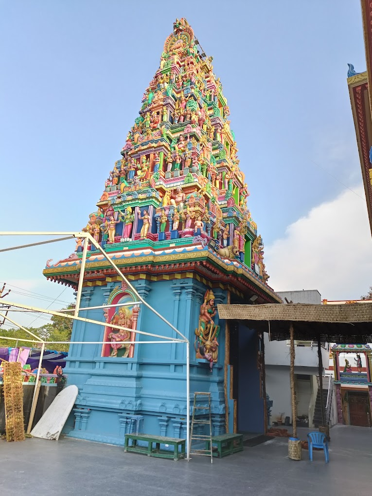

Sri Vasavi Kanyaka Parameswari Temple

Temple Name: Sri Vasavi Kanyaka Parameswari Temple
History: The Shaivaite Komatis see Kanyaka as Kanyaka Parameshvari. She is regarded to have cursed a king and killed him. She later showed herself as an incarnation of Parvati, and went to Kailasa, marrying the form of Shiva worshipped as Nagareshwara. This tradition is more common among Beri Komatis and Gavaras
Maps